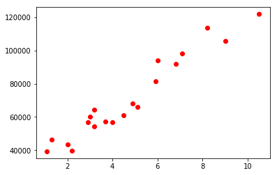
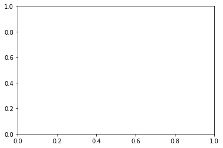

Python 3.7.3 (default, Mar 27 2019, 17:13:21) [MSC v.1915 64 bit (AMD64)]
Type "copyright", "credits" or "license" for more information.
IPython 7.4.0 -- An enhanced Interactive Python.
In [1]: runfile('C:/Users/DELL/Desktop/Machine Learning A-Z Template Folder/Part 2 - Regression/Section 4 - Simple Linear Regression/untitled0.py', wdir='C:/Users/DELL/Desktop/Machine Learning A-Z Template Folder/Part 2 - Regression/Section 4 - Simple Linear Regression')
Traceback (most recent call last):
File "<ipython-input-1-73b827ca7a36>", line 1, in <module>
runfile('C:/Users/DELL/Desktop/Machine Learning A-Z Template Folder/Part 2 - Regression/Section 4 - Simple Linear Regression/untitled0.py', wdir='C:/Users/DELL/Desktop/Machine Learning A-Z Template Folder/Part 2 - Regression/Section 4 - Simple Linear Regression')
File "C:\Users\DELL\Anaconda3\lib\site-packages\spyder_kernels\customize\spydercustomize.py", line 786, in runfile
execfile(filename, namespace)
File "C:\Users\DELL\Anaconda3\lib\site-packages\spyder_kernels\customize\spydercustomize.py", line 110, in execfile
exec(compile(f.read(), filename, 'exec'), namespace)
File "C:/Users/DELL/Desktop/Machine Learning A-Z Template Folder/Part 2 - Regression/Section 4 - Simple Linear Regression/untitled0.py", line 7, in <module>
dataset = pd.read_csv('Data.csv')
File "C:\Users\DELL\Anaconda3\lib\site-packages\pandas\io\parsers.py", line 702, in parser_f
return _read(filepath_or_buffer, kwds)
File "C:\Users\DELL\Anaconda3\lib\site-packages\pandas\io\parsers.py", line 429, in _read
parser = TextFileReader(filepath_or_buffer, **kwds)
File "C:\Users\DELL\Anaconda3\lib\site-packages\pandas\io\parsers.py", line 895, in __init__
self._make_engine(self.engine)
File "C:\Users\DELL\Anaconda3\lib\site-packages\pandas\io\parsers.py", line 1122, in _make_engine
self._engine = CParserWrapper(self.f, **self.options)
File "C:\Users\DELL\Anaconda3\lib\site-packages\pandas\io\parsers.py", line 1853, in __init__
self._reader = parsers.TextReader(src, **kwds)
File "pandas/_libs/parsers.pyx", line 387, in pandas._libs.parsers.TextReader.__cinit__
File "pandas/_libs/parsers.pyx", line 705, in pandas._libs.parsers.TextReader._setup_parser_source
FileNotFoundError: [Errno 2] File b'Data.csv' does not exist: b'Data.csv'
In [2]:
In [2]: import numpy as np
...: import matplotlib.pyplot as plt
...: import pandas as pd
In [3]: dataset = pd.read_csv('Salary_Data.csv')
...: X = dataset.iloc[:,:-1].values
...: Y = dataset.iloc[:,3].values
Traceback (most recent call last):
File "<ipython-input-3-c2b7390296bf>", line 3, in <module>
Y = dataset.iloc[:,3].values
File "C:\Users\DELL\Anaconda3\lib\site-packages\pandas\core\indexing.py", line 1494, in __getitem__
return self._getitem_tuple(key)
File "C:\Users\DELL\Anaconda3\lib\site-packages\pandas\core\indexing.py", line 2143, in _getitem_tuple
self._has_valid_tuple(tup)
File "C:\Users\DELL\Anaconda3\lib\site-packages\pandas\core\indexing.py", line 223, in _has_valid_tuple
self._validate_key(k, i)
File "C:\Users\DELL\Anaconda3\lib\site-packages\pandas\core\indexing.py", line 2070, in _validate_key
self._validate_integer(key, axis)
File "C:\Users\DELL\Anaconda3\lib\site-packages\pandas\core\indexing.py", line 2139, in _validate_integer
raise IndexError("single positional indexer is out-of-bounds")
IndexError: single positional indexer is out-of-bounds
In [4]:
In [4]: dataset = pd.read_csv('Salary_Data.csv')
In [5]: X = dataset.iloc[:,:-1].values
In [6]: Y = dataset.iloc[:,1].values
In [7]: from sklearn.model_selection import train_test_split
...: X_train,X_test,Y_train,Y_test = train_test_split(X,Y,test_size=1/3,random_state=0)
In [8]: from sklearn.linear_model import LinearRegression
...: regressor = LinearRegression()
...: regressor.fit(X_train,Y_train,)
Out[8]:
LinearRegression(copy_X=True, fit_intercept=True, n_jobs=None,
normalize=False)
In [9]: Y_pred=regressor.predict(X_test)
In [10]: plt.scatter(X_train,Y_train,color='red')
...: plt.plot(X_train,regressor.predict(X_test),color='blue')
...: plt.title("salary vs experience")
...: plt.xlabel("years of exp")
...: plt.ylabel("salary")
...: plt.show()
Traceback (most recent call last):
File "<ipython-input-10-6bf62092e9dc>", line 2, in <module>
plt.plot(X_train,regressor.predict(X_test),color='blue')
File "C:\Users\DELL\Anaconda3\lib\site-packages\matplotlib\pyplot.py", line 2811, in plot
is not None else {}), **kwargs)
File "C:\Users\DELL\Anaconda3\lib\site-packages\matplotlib\__init__.py", line 1810, in inner
return func(ax, *args, **kwargs)
File "C:\Users\DELL\Anaconda3\lib\site-packages\matplotlib\axes\_axes.py", line 1611, in plot
for line in self._get_lines(*args, **kwargs):
File "C:\Users\DELL\Anaconda3\lib\site-packages\matplotlib\axes\_base.py", line 393, in _grab_next_args
yield from self._plot_args(this, kwargs)
File "C:\Users\DELL\Anaconda3\lib\site-packages\matplotlib\axes\_base.py", line 370, in _plot_args
x, y = self._xy_from_xy(x, y)
File "C:\Users\DELL\Anaconda3\lib\site-packages\matplotlib\axes\_base.py", line 231, in _xy_from_xy
"have shapes {} and {}".format(x.shape, y.shape))
ValueError: x and y must have same first dimension, but have shapes (20, 1) and (10,)
In [11]:
In [11]: from sklearn.linear_model import LinearRegression
...: regressor = LinearRegression()
...: regressor.fit(X_train,Y_train)
...: #predict test set results
...: Y_pred=regressor.predict(X_test)
...: #Visualization of Training set results
...: plt.scatter(X_train,Y_train,color='red')
...: plt.plot(X_train,regressor.predict(X_test),color='blue')
...: plt.title("salary vs experience")
...: plt.xlabel("years of exp")
...: plt.ylabel("salary")
...: plt.show()
Traceback (most recent call last):
File "<ipython-input-11-ae2e557f73f1>", line 8, in <module>
plt.plot(X_train,regressor.predict(X_test),color='blue')
File "C:\Users\DELL\Anaconda3\lib\site-packages\matplotlib\pyplot.py", line 2811, in plot
is not None else {}), **kwargs)
File "C:\Users\DELL\Anaconda3\lib\site-packages\matplotlib\__init__.py", line 1810, in inner
return func(ax, *args, **kwargs)
File "C:\Users\DELL\Anaconda3\lib\site-packages\matplotlib\axes\_axes.py", line 1611, in plot
for line in self._get_lines(*args, **kwargs):
File "C:\Users\DELL\Anaconda3\lib\site-packages\matplotlib\axes\_base.py", line 393, in _grab_next_args
yield from self._plot_args(this, kwargs)
File "C:\Users\DELL\Anaconda3\lib\site-packages\matplotlib\axes\_base.py", line 370, in _plot_args
x, y = self._xy_from_xy(x, y)
File "C:\Users\DELL\Anaconda3\lib\site-packages\matplotlib\axes\_base.py", line 231, in _xy_from_xy
"have shapes {} and {}".format(x.shape, y.shape))
ValueError: x and y must have same first dimension, but have shapes (20, 1) and (10,)

In [12]:
In [12]: plt.plot(X_train,regressor.predict(X_test),color='blue')
Traceback (most recent call last):
File "<ipython-input-12-c5570fa3b848>", line 1, in <module>
plt.plot(X_train,regressor.predict(X_test),color='blue')
File "C:\Users\DELL\Anaconda3\lib\site-packages\matplotlib\pyplot.py", line 2811, in plot
is not None else {}), **kwargs)
File "C:\Users\DELL\Anaconda3\lib\site-packages\matplotlib\__init__.py", line 1810, in inner
return func(ax, *args, **kwargs)
File "C:\Users\DELL\Anaconda3\lib\site-packages\matplotlib\axes\_axes.py", line 1611, in plot
for line in self._get_lines(*args, **kwargs):
File "C:\Users\DELL\Anaconda3\lib\site-packages\matplotlib\axes\_base.py", line 393, in _grab_next_args
yield from self._plot_args(this, kwargs)
File "C:\Users\DELL\Anaconda3\lib\site-packages\matplotlib\axes\_base.py", line 370, in _plot_args
x, y = self._xy_from_xy(x, y)
File "C:\Users\DELL\Anaconda3\lib\site-packages\matplotlib\axes\_base.py", line 231, in _xy_from_xy
"have shapes {} and {}".format(x.shape, y.shape))
ValueError: x and y must have same first dimension, but have shapes (20, 1) and (10,)

In [13]:
In [13]: plt.plot(X_train,regressor.predict(X_test),color='blue')
Traceback (most recent call last):
File "<ipython-input-13-c5570fa3b848>", line 1, in <module>
plt.plot(X_train,regressor.predict(X_test),color='blue')
File "C:\Users\DELL\Anaconda3\lib\site-packages\matplotlib\pyplot.py", line 2811, in plot
is not None else {}), **kwargs)
File "C:\Users\DELL\Anaconda3\lib\site-packages\matplotlib\__init__.py", line 1810, in inner
return func(ax, *args, **kwargs)
File "C:\Users\DELL\Anaconda3\lib\site-packages\matplotlib\axes\_axes.py", line 1611, in plot
for line in self._get_lines(*args, **kwargs):
File "C:\Users\DELL\Anaconda3\lib\site-packages\matplotlib\axes\_base.py", line 393, in _grab_next_args
yield from self._plot_args(this, kwargs)
File "C:\Users\DELL\Anaconda3\lib\site-packages\matplotlib\axes\_base.py", line 370, in _plot_args
x, y = self._xy_from_xy(x, y)
File "C:\Users\DELL\Anaconda3\lib\site-packages\matplotlib\axes\_base.py", line 231, in _xy_from_xy
"have shapes {} and {}".format(x.shape, y.shape))
ValueError: x and y must have same first dimension, but have shapes (20, 1) and (10,)
In [14]:
In [14]: plt.scatter(X_train,Y_train,color='red')
...: plt.plot(X_train,regressor.predict(X_test),color='blue')
Traceback (most recent call last):
File "<ipython-input-14-dd576729f050>", line 2, in <module>
plt.plot(X_train,regressor.predict(X_test),color='blue')
File "C:\Users\DELL\Anaconda3\lib\site-packages\matplotlib\pyplot.py", line 2811, in plot
is not None else {}), **kwargs)
File "C:\Users\DELL\Anaconda3\lib\site-packages\matplotlib\__init__.py", line 1810, in inner
return func(ax, *args, **kwargs)
File "C:\Users\DELL\Anaconda3\lib\site-packages\matplotlib\axes\_axes.py", line 1611, in plot
for line in self._get_lines(*args, **kwargs):
File "C:\Users\DELL\Anaconda3\lib\site-packages\matplotlib\axes\_base.py", line 393, in _grab_next_args
yield from self._plot_args(this, kwargs)
File "C:\Users\DELL\Anaconda3\lib\site-packages\matplotlib\axes\_base.py", line 370, in _plot_args
x, y = self._xy_from_xy(x, y)
File "C:\Users\DELL\Anaconda3\lib\site-packages\matplotlib\axes\_base.py", line 231, in _xy_from_xy
"have shapes {} and {}".format(x.shape, y.shape))
ValueError: x and y must have same first dimension, but have shapes (20, 1) and (10,)

In [15]:
In [15]: